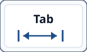

En 5e, à Chengdu, tu as manipulé de vraies données : collectées, triées, rangées, et tu as tracé leur chemin du capteur jusqu'à l'écran. Tu as même dit qui avait le droit de les lire.
Cette année, ce qui change : on prend le problème par l'autre bout : qui pourrait les lire sans en avoir le droit, et comment on l'en empêche. Tu ne vas plus seulement ranger l'information, tu vas la protéger.
Tu n'as pas fait la 5e ici ? Ce qu'il faut savoir tient en une phrase : tes données passent par des machines qui ne t'appartiennent pas.
Le mode essentiel masque le tableau des compétences et les boutons d'aide et de correction : il ne reste que les consignes et les exercices.
Cette séquence s'appuie sur ce que tu as fait en 5e. Trois questions pour savoir, toi comme le professeur, sur quoi on peut s'appuyer. Elles ne comptent pas dans ta progression et ne sont pas notées — « je ne sais pas encore » est une réponse utile.
Imagine que tu utilises ton smartphone pour envoyer un e-mail avec une photo de classe. Soudain, ton compte est hacké car ton mot de passe était trop simple. Tes messages privés sont exposés sur les réseaux sociaux, et tu reçois des commentaires malveillants. Cette histoire est inspirée de faits réels : en 2025, des milliers d'adolescents ont été victimes de phishing via des apps comme Snapchat ou Instagram, menant à des cas de harcèlement cybernétique rapportés par la CNIL.
Dans le monde d'aujourd'hui, où les e-mails, réseaux sociaux et services en ligne font partie de ton quotidien, les risques sont partout : vol de données, usurpation d'identité, ou propagation de malware. Mais avec les bonnes pratiques, tu peux te protéger – active 2FA, utilise des mots de passe forts, et sois vigilant avec les liens. Cela te prépare à un avenir où la cybersécurité est essentielle pour tous.
Comment protéger mes données, mes comptes et ma e‑réputation tout en utilisant des services numériques (e-mails, réseaux sociaux, etc.) ?
Le niveau attendu est exactement le même qu'avec la consigne libre : ces débuts de phrases retirent l'obstacle de la rédaction, pas l'exigence.
| Domaine | Formulation | Traces (exemples) |
|---|---|---|
| Socle — Domaine 2 | Adopter des comportements responsables; Comprendre les risques numériques; Respecter les règles d'usage | Réponses aux quizzes sur les risques, adoption de bonnes pratiques dans les exercices DnD, respect des règles dans les quizzes sur les licences |
| CRCN — S1.1 / S2.2 | Protéger ses données; Sécuriser ses comptes (mots de passe, 2FA); Gérer ses traces | Activation 2FA dans quizzes, mots de passe forts dans exercices, gestion traces dans quizzes et DnD |
| Technologie — C1→C3 | Identifier risques et bonnes pratiques; Classer les données; Programmer un test d'URL (HTTP/HTTPS) | Identification risques dans quizzes, classification données dans DnD, code Python pour test URL dans quizzes |
Imagine que tu es un élève de 4e au collège. Un matin, tu reçois un e-mail qui semble provenir de la direction de ton établissement. Il te demande de cliquer sur un lien pour "mettre à jour tes informations personnelles" afin d'accéder à une nouvelle plateforme éducative. Le message est urgent et menace de bloquer ton compte Pronote si tu ne le fais pas immédiatement. Intrigué, tu cliques... et sans le savoir, tu viens d'installer un malware sur ton ordinateur familial.
Cette situation est inspirée de faits réels récents. Par exemple, en juillet 2025, la ville de St. Paul aux États-Unis a été victime d'une attaque ransomware par le groupe Interlock, qui a volé 43 Go de données internes, y compris des informations sensibles sur les citoyens. De même, en septembre 2025, un cyberincident majeur a perturbé les aéroports européens comme Heathrow, causé par une surcharge DDoS qui a paralysé les systèmes. Au collège, un tel risque pourrait survenir via un phishing ciblant les élèves, comme dans l'attaque algérienne contre le fonds social marocain en avril 2025, où des hackers ont fuité des données sensibles.
Risques impliqués : Le phishing peut mener à l'installation d'un keylogger (enregistreur de frappes) ou d'un trojan, exposant tes mots de passe et données personnelles. Un ransomware pourrait chiffrer tes fichiers scolaires, exigeant une rançon. Une attaque DDoS pourrait bloquer l'accès au site du collège, perturbant les cours en ligne.
Bonne attitude à avoir : Vérifie toujours l'expéditeur (hover sur l'e-mail pour voir l'adresse réelle). Ne clique pas sur des liens suspects ; contacte directement la direction par un canal officiel (comme l'ENT du collège). Active la 2FA sur tous tes comptes, utilise un antivirus à jour, et fais des sauvegardes régulières de tes devoirs sur un cloud sécurisé comme OneDrive scolaire. Si tu suspects quelque chose, alerte un adulte ou le professeur de technologie immédiatement.
En adoptant ces habitudes, tu te donnes les moyens de repérer une attaque, et tu protèges non seulement tes données mais aussi celles de ton entourage. Souviens-toi : la vigilance est la première ligne de défense !
Les assistants conversationnels (ChatGPT et les autres) savent expliquer une notion comme « rançongiciel » ou « hameçonnage ». Trois conditions avant d'en ouvrir un : il faut un compte, un âge minimum (13 ans, et l'accord d'un adulte avant 18 ans), et l'accord de ton établissement — tout ce que tu écris à un assistant part sur les serveurs de l'entreprise qui le fait tourner. C'est exactement le sujet de cette séquence.
Alors avant de demander à une machine : la synthèse de la séquence répond déjà à la plupart des questions, et ton professeur répond aux autres. Et si tu utilises un assistant, garde le réflexe qu'on travaille ici : vérifie ce qu'il te dit ailleurs qu'auprès de lui-même.
Phishing 2FA Mot de passe Sauvegarde MAJ & Antivirus Malware DDoS VPN HTTPS Cookie
Le niveau attendu est exactement le même qu'avec la consigne libre : ces débuts de phrases retirent l'obstacle de la rédaction, pas l'exigence.
Phishing : faux message qui imite un service pour voler des infos
2FA : 2 preuves d'identité (mot de passe + code/app/clé)
Mot de passe fort : long (phrase), unique, complexe
Sauvegarde : copie de secours pour récupérer ses données
Antivirus/MAJ : réduit le risque de compromission
Malware : logiciel malveillant qui infecte l'ordinateur
DDoS : surcharge un site avec trop de connexions
VPN : masque ton IP et chiffre ta connexion
HTTPS : protocole sécurisé qui chiffre les données
Cookie : fichier qui suit tes actions sur un site
Phishing : faux message pour voler des infos
Ransomware : chiffre et demande rançon
Trojan : se fait passer pour logiciel utile
Malware : logiciel malveillant général
DDoS : surcharge le serveur
Keylogger : enregistre les frappes clavier
Micro-question Phishing : Se faire passer pour un service afin de voler des infos
Faites glisser chaque étiquette : Risques / attaques : Lien inconnu, Fichier .exe suspect, Email d'une banque inconnue, Pièce jointe non demandée
Bonnes pratiques : 2FA activée, Sauvegarde hebdo, Antivirus à jour, VPN sur WiFi public
Micro-questions — Mots de passe : sûrs : MonChien!@dore*LesCroquettes#2025!, SoleilBrille@Paris2024#France!, MontagneVerte*Ete2025$Voyage!
Quiz Menaces & Solutions : Q1 Activer 2FA, Q2 Tes fichiers, Q3 Antivirus, Q4 Le serveur, Q5 Logiciel malveillant, Q6 Pare-feu
Imagine-toi en 4e ou 3e au collège, en train de scroller sur ton smartphone pendant la récré. Soudain, une alerte push de ton app favorite, comme TikTok ou Snapchat, te prévient d'une nouvelle mise à jour pour "améliorer la sécurité". Ce que tu ne sais pas, c'est que derrière cette app, des milliers de lignes de code Python veillent à protéger tes données contre les hackers. Par exemple, en 2025, Python est au cœur de systèmes comme ceux de Netflix pour recommander des vidéos personnalisées, ou de Instagram pour détecter les contenus malveillants via l'IA. Sans Python, ces plateformes ne pourraient pas analyser des milliards de données en temps réel pour bloquer les cybermenaces comme le phishing ou les deepfakes.
Dans l'écosystème numérique d'aujourd'hui, Python est partout : il pilote les robots d'Amazon pour livrer tes colis, optimise les algorithmes de Google pour tes recherches scolaires, et même aide les médecins à analyser des images médicales avec des outils comme TensorFlow. En apprenant Python, tu deviens un acteur clé de cet univers – imagine coder un bot pour vérifier si un site est sécurisé avant de cliquer, ou créer une app simple pour alerter tes amis sur les risques en ligne. C'est concret et puissant !
Et pour ton avenir ? Les perspectives d'emploi explosent : d'ici 2030, plus de 1 million d'emplois en cybersécurité et développement seront créés en Europe, avec Python comme compétence n°1 demandée. Des métiers comme data scientist (salaire moyen 50 000€/an), ingénieur IA, ou expert cybersécurité (jusqu'à 80 000€) attendent ceux qui maîtrisent ce langage. En 4e ou 3e, commencer maintenant te donne un avantage énorme – pense à Elon Musk ou aux créateurs de YouTube, qui ont tous débuté jeunes avec la programmation. Python n'est pas juste un cours : c'est la clé pour inventer le futur, protéger la société, et décrocher un job passionnant. Prêt à coder pour changer le monde ?
Rappel : En Python, l'indentation (décalage vers la droite) n'est pas décorative : c'est une règle obligatoire qui définit les blocs (if, for, while, def…).
La touche Tab insère souvent 4 espaces. Ne mélange pas Tab et espaces dans un même fichier.

age = 20
if age >= 18:
print("Tu es majeur.") # <-- Indentation manquante (provoque une erreur)
print("Fin du programme.")Sortie possible : IndentationError: expected an indented block
age = 20
if age >= 18:
print("Tu es majeur.")
print("Fin du programme.")# Programme complet : Vérifier la sécurité d'une URL
url = input("Entre une URL : ") # Demande à l'utilisateur
if url.startswith("https://"):
print("✅ Connexion sécurisée (HTTPS)")
print(" Les données sont chiffrées")
else:
print("⚠️ Connexion non sécurisée (HTTP)")
print(" Les données peuvent être interceptées")
print("Fin du programme.")# Vérifier une liste d'URLs avec une boucle FOR
urls = ["http://site1.com", "https://site2.fr", "http://phishing.com"]
for url in urls: # Parcourir chaque URL
if url.startswith("https://"):
print(f"✅ {url} = SÉCURISÉE")
else:
print(f"⚠️ {url} = NON SÉCURISÉE")
print("Vérification terminée.")Sortie attendue :
⚠️ http://site1.com = NON SÉCURISÉE
✅ https://site2.fr = SÉCURISÉE
⚠️ http://phishing.com = NON SÉCURISÉE
Vérification terminée.# Tester URLs jusqu'à trouver une sécurisée
print("🔍 Testeur de sécurité URL - Tape 'quit' pour arrêter")
while True: # Boucle infinie
url = input("Entre une URL : ").strip()
if url.lower() == "quit":
print("⏹️ Arrêt du testeur.")
break # Sortir de la boucle
if url.startswith("https://"):
print(f"✅ {url} = SÉCURISÉE !")
else:
print(f"⚠️ {url} = NON SÉCURISÉE")
print("Fin du programme.")Exemple d'exécution :
🔍 Testeur de sécurité URL - Tape 'quit' pour arrêter
Entre une URL : http://test.com
⚠️ http://test.com = NON SÉCURISÉE
Entre une URL : https://banque.fr
✅ https://banque.fr = SÉCURISÉE !
Entre une URL : quit
⏹️ Arrêt du testeur.
Fin du programme.break dans une boucle ?Q1: Oui, Q2: for, Q3: 4, Q4: Sort de la boucle, Q5: http://phishing.com, Q6: Chaque élément de la liste
Q1: Oui, HTTPS chiffre les données en transit
Q2: for parcourt une liste prédéfinie
Q3: 4 espaces pour l'indentation Python
Q4: break sort de la boucle
Q5: http://phishing.com est dangereuse
Q6: url contient chaque élément de la liste
Imagine que tu es en 4e, et que tu reçois un message sur ton téléphone d'un "ami" te demandant ta date de naissance et ton adresse e-mail pour "un projet de classe". Sans réfléchir, tu partages ces infos. Le lendemain, tu découvres que ton compte scolaire a été hacké, et des notes falsifiées apparaissent sur Pronote. Pire, tes photos personnelles circulent sur un groupe WhatsApp sans ton accord.
Cette situation s'inspire d'incidents réels, comme le cybermois 2025 en France, où des campagnes sensibilisent les écoles à la cybersécurité après des fuites de données dans des établissements éducatifs. En septembre 2025, une enquête du ministère de l'Éducation nationale a révélé que 70% des élèves partagent des données sensibles sans protection, menant à des cas de harcèlement cybernétique. Le programme de technologie au collège de 2024 insiste sur la classification des données pour éviter de tels risques.
Risques impliqués : Les données personnelles peuvent être utilisées pour l'usurpation d'identité ou le doxxing, exposant à des dangers comme le harcèlement ou le vol financier. Les données sensibles (santé, opinions) sont encore plus vulnérables et protégées par la loi RGPD.
Bonne attitude à avoir : Identifie toujours ce qui est personnel : ne partage pas ton nom, photo ou localisation sans raison. Utilise des pseudonymes en ligne, vérifie les demandes d'infos, et signale tout partage suspect à un adulte. Au collège, cela t'aide à protéger ta vie privée dès maintenant.
En comprenant cela, tu construis une e-réputation solide et évites des problèmes futurs. La cybersécurité commence par savoir ce que tu partages !
Expliquez pourquoi il faut protéger ces données et ce qu’il pourrait arriver si elles étaient dévoilées.
Le niveau attendu est exactement le même qu'avec la consigne libre : ces débuts de phrases retirent l'obstacle de la rédaction, pas l'exigence.
La divulgation de ces informations peut permettre l’usurpation d’identité, le vol ou la fraude (paiements frauduleux), la discrimination (données de santé), le harcèlement ou l’atteinte à la vie privée. Il est essentiel de limiter leur diffusion et de paramétrer la confidentialité de ses comptes.
✅ Un identifiant (login) permet d’accéder à vos services en ligne (ENT, réseau social, messagerie). S’il est divulgué avec votre mot de passe, un attaquant peut accéder à vos comptes et usurper votre identité.
Identité : Infos qui te nomment directement (nom, date naissance).
Contact : Moyens de te joindre (e-mail, téléphone).
Sensibles : Infos privées comme santé ou opinions.
Identité : Nom/prénom, Date naissance, Photo d'identité
Contact : Adresse e‑mail, N° de téléphone, Adresse postale
Sensibles : Données de santé, Opinion politique, Religion
Q1: Une personne, Q2: Santé, Q3: Données personnelles, Q4: Personnelle, Q5: Personnelle, Q6: Sensible, Q7: Identité
Imagine que pendant un cours en ligne, tu ouvres un fichier partagé par un "camarade" sur l'ENT. Soudain, ton ordinateur ralentit, et un message demande une rançon pour débloquer tes fichiers de devoirs. Tes notes et infos personnelles sont encryptées !
Ce scénario est basé sur des actualités comme l'enquête 2025 du ministère de l'Éducation nationale, où 42% des écoles françaises ont subi des cyberattaques, souvent via des fichiers suspects. Le programme techno 2024 met l'accent sur les bonnes pratiques pour sécuriser les comptes, aligné sur le Cybermois d'octobre 2025 qui sensibilise les élèves.
Risques impliqués : Perte d'accès à tes données, vol d'identité, ou propagation à l'école entière via réseaux partagés.
Bonne attitude à avoir : Utilise des mots de passe forts, active 2FA sur Pronote, mets à jour ton antivirus, et sauvegarde sur cloud scolaire. N'ouvre pas de fichiers suspects – vérifie toujours la source !
Protéger tes données aujourd'hui te prépare à un monde où la cybersécurité est essentielle pour tous les métiers numériques.
Glisse les solutions aux bonnes attaques. Survole pour infos !
Le niveau attendu est exactement le même qu'avec la consigne libre : ces débuts de phrases retirent l'obstacle de la rédaction, pas l'exigence.
Phishing : 2FA
Rançongiciel : Sauvegarde
Faille : Mises à jour
Malware : Antivirus
Suivi IP : VPN
Brute force : Mot de passe fort
Phishing : Activer 2FA
Rançongiciel : Sauvegarder
Faille corrigée : Mettre à jour
Malware : Installer antivirus
Suivi IP : Utiliser VPN
Brute force : Mot de passe fort
Q1: Mot de passe fort, Q2: Une seconde preuve, Q3: Failles de sécurité, Q4: Ransomware, Q5: Malware, Q6: Adresse IP, Q7: Phishing
Imagine que tu postes une photo de ta sortie au collège sur Instagram. Quelques jours plus tard, tu reçois des pubs pour des magasins près de chez toi, et un inconnu commente avec des infos sur ta vie privée. Tes traces en ligne ont été suivies !
Inspiré d'actualités comme le Cybermois 2025, où 60% des jeunes français sont traqués via cookies sans le savoir. Le programme techno 2024 enseigne la gestion des traces pour éviter le profilage, comme dans les cas d'espionnage via géolocalisation rapportés en 2025.
Risques impliqués : Profilage publicitaire, harcèlement, ou vol d'identité via accumulations de traces (cookies, géo).
Bonne attitude à avoir : Gère tes cookies, désactive géo inutile, utilise navigation privée, et un VPN. Pense avant de poster – ta e-réputation dépend de tes traces !
Limiter tes traces te donne le contrôle de ta vie numérique dès le collège.
Décris deux actions concrètes que tu vas appliquer cette semaine pour réduire tes traces numériques.
💡 Exemples :
✏️ Écris 3 à 4 phrases expliquant quoi, quand et comment tu le feras.
Exemple : Je vais désactiver la géolocalisation de mon appli photo sauf quand j’en ai besoin, et je me déconnecterai des comptes après chaque usage sur l’ordi du collège…
Cochez : VPN, Bloquer cookies, Déconnexion.
Quiz : Pensez à ce qui réduit la visibilité en ligne.
QCM : VPN, Bloquer cookies, Déconnexion.
Q1: Suivre navigation, Q2: Historique local, Q3: IP, Q4: Position, Q5: Sessions ouvertes, Q6: Traces, Q7: Intermédiaire.
Imagine que tu partages une photo drôle d'un camarade sur Snapchat sans son accord. Elle devient virale, et il subit du harcèlement. Ton compte est signalé, affectant ta réputation scolaire.
Basé sur des cas comme en 2025, où des élèves français ont été sanctionnés pour violations de droit à l'image, aligné sur le programme techno 2024 qui enseigne le respect des licences Creative Commons pour protéger les œuvres.
Risques impliqués : Sanctions légales, dommages à l'e-réputation, ou conflits avec amis.
Bonne attitude à avoir : Demande toujours l'accord pour photos, cite les sources pour œuvres, utilise Creative Commons. Construis une e-réputation positive en postant responsablement.
Cela te prépare à un monde où ta présence en ligne influence ton avenir professionnel.
Glisse les actions aux bons cas. Survole pour infos !
Survole chaque étiquette pour découvrir ses super-pouvoirs ! 🦸♂️ Glisse-les dans les bonnes catégories pour marquer des points !
Image en ligne : Citer licence
Filmer camarade : Demander autorisation
Sans accord : Ne pas publier
Jeu : Survole pour définitions. Commercial : CC0, CC BY, CC BY-SA, CC BY-ND. Modification : CC0, CC BY, CC BY-SA, CC BY-NC, CC BY-NC-SA. Attribution : CC BY et combinaisons. ShareAlike : CC BY-SA, CC BY-NC-SA.
Image en ligne : Citer licence
Filmer camarade : Demander autorisation
Sans accord : Ne pas publier
Q1: Œuvres, Q2: Partage conditions, Q3: Interdit, Q4: Tes posts, Q5: Citation, Q6: Autorisation, Q7: Ne pas publier.
Jeu : Commercial : CC0, CC BY, CC BY-SA, CC BY-ND. Modification : CC0, CC BY, CC BY-SA, CC BY-NC, CC BY-NC-SA. Attribution : CC BY, CC BY-SA, CC BY-ND, CC BY-NC, CC BY-NC-SA, CC BY-NC-ND. ShareAlike : CC BY-SA, CC BY-NC-SA.
Cette séquence sur la cybersécurité aligne parfaitement avec le programme de technologie au collège de 2024, qui met l'accent sur la protection des données, la sécurisation des comptes et la gestion des traces numériques au cycle 4. Inspirée du socle commun (domaine 2 : comportements responsables) et du CRCN (S1.1/S2.2), elle prépare les élèves à identifier risques et bonnes pratiques, classer données, et programmer des tests URL.
En 2025, l'actualité souligne l'urgence : le Cybermois sensibilise aux cyberattaques en éducation, avec une enquête montrant 42% des écoles françaises touchées. Des incidents comme les fuites de données sensibles en avril 2025 (Algérie-Maroc) ou les perturbations DDoS aux aéroports (septembre 2025) rappellent que la vigilance est clé. Retenez : utilisez 2FA, mots de passe forts, VPN ; respectez droits d'auteur et image ; limitez traces pour une e-réputation solide. Ces compétences sont essentielles pour un monde numérique sûr !
Tu maîtrises désormais les bases de la cybersécurité. 👏